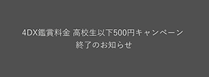

|
シネマサンシャインメールマガジン 2020/2/28号 |
 |
毎月1日は映画サービスデー
どなたさまでも1,200円でご鑑賞いただけます。 次回は来週3/1（日）です！ ※3D、4DX、IMAX、ATMOS、dts-x、ScreenX、BESTIAは別途追加料金が必要となります。 |
オススメ作品
『Fukushima 50』
3/6（金）公開
©2020『Fukushima 50』製作委員会
2011年3月11日に発生した東日本大震災に伴う福島第一原子力発電所の事故で、未曾有の事態を防ごうと現場に留まり奮闘し続けた人々の知られざる姿を描いたヒューマンドラマ。 2011年3月11日午後2時46分、マグニチュード9.0、最大震度7という日本の観測史上最大となる地震が起こり、太平洋沿岸に押し寄せた巨大津波に飲み込まれた福島第一原発は全電源を喪失する。 このままでは原子炉の冷却装置が動かず、炉心溶融（メルトダウン）によって想像を絶する被害がもたらされることは明らかで、それを防ごうと、伊崎利夫をはじめとする現場作業員や所長の吉田昌郎らは奔走するが……。
監督：若松節朗
出演：佐藤浩市、渡辺謙、吉岡秀隆、緒形直人、平田満、火野正平、萩原聖人、吉岡里帆、斎藤工、富田靖子、佐野史郎、安田成美
出演：佐藤浩市、渡辺謙、吉岡秀隆、緒形直人、平田満、火野正平、萩原聖人、吉岡里帆、斎藤工、富田靖子、佐野史郎、安田成美
上映作品


2/28（金）公開
『新作歌舞伎 「風の谷のナウシカ」後編ディレイビューｲング』
2/28（金）公開
『地獄の黙示録 ファイナル・カット』※IMAX上映

2/28（金）公開
『野性の呼び声』

2/29（土）公開
『劇場版 SHIROBAKO』
3/6（金）公開
『仮面病棟』


ニュース
○新型コロナウイルスの影響でお越しになれない方へ払い戻しのお知らせ
連日報道されている通り、新型コロナウィルス感染症の拡大は終息の見通しが立っておりません。
シネマサンシャインではお客様の健康と安全を第一に考え、体調にご不安を感じられる方、もしくはご来場を自粛される方に、当面の間、チケットの払い戻しを致します。
ご希望の方は、ご鑑賞前に劇場までお問い合わせ下さい。
なお、映画館の営業は通常通り行っております。
●払い戻し対象は、事前予約された劇場座席指定券（ムビチケ・前売券等を除く）となります。
●ライブビューイングや一部特別上映等、主催者が当劇場でない場合に関しては主催者側の判断により払い戻しの可否を決定いたします。
●発熱・咳など当日、体調にご不安のある方は、ご無理なさらぬようお願い致します。
シネマサンシャインではお客様の健康と安全を第一に考え、体調にご不安を感じられる方、もしくはご来場を自粛される方に、当面の間、チケットの払い戻しを致します。
ご希望の方は、ご鑑賞前に劇場までお問い合わせ下さい。
なお、映画館の営業は通常通り行っております。
●払い戻し対象は、事前予約された劇場座席指定券（ムビチケ・前売券等を除く）となります。
●ライブビューイングや一部特別上映等、主催者が当劇場でない場合に関しては主催者側の判断により払い戻しの可否を決定いたします。
●発熱・咳など当日、体調にご不安のある方は、ご無理なさらぬようお願い致します。
○『映画ドラえもん のび太の新恐竜 』公開延期のお知らせ
この度 、２０２０年３月６日（金）より公開を予定しておりました『映画ドラえもん のび太の新恐竜 』につきまして、新型コロナウイルスの感染状況ならびに新型コロナウイルス感染症対策本部において示された方針等に鑑み、公開日が延期となりましたことをお知らせいたします。
前売券の払い戻し等に関しましては詳細が決まり次第お知らせいたします。
お問合せは映画公式ＨＰ内のお問い合わせフォームへ
https://www.toho.co.jp/
前売券の払い戻し等に関しましては詳細が決まり次第お知らせいたします。
お問合せは映画公式ＨＰ内のお問い合わせフォームへ
https://www.toho.co.jp/
○『映画しまじろう しまじろうとそらとぶふね 』公開延期のお知らせ
2020年2月28日（金）より公開予定の『映画しまじろう しまじろうとそらとぶふね』につきまして、
新型コロナウィルスの感染状況ならびに新型コロナウィルス感染症対策本部において示された
方針等に鑑み、公開日が延期となりましたことをお知らせいたします。
詳細は、映画公式HPをご参照くださいませ。
https://kodomo.benesse.ne.jp/open/movie/2020/
新型コロナウィルスの感染状況ならびに新型コロナウィルス感染症対策本部において示された
方針等に鑑み、公開日が延期となりましたことをお知らせいたします。
詳細は、映画公式HPをご参照くださいませ。
https://kodomo.benesse.ne.jp/open/movie/2020/
○おやこシネマ開催中止について
各劇場にて開催を予定しておりましたおやこシネマ ですが、新型コロナウイルスの感染拡大を受け、以下の開催を中止とさせていただきます。
3月10日(火)『映画ドラえもん のび太の新恐竜』
3月17日(火)『2分の1の魔法』
3月24日(火)『貴族降臨 －PRINCE OF LEGEND－』
3月24日(火)『一度、死んでみた』
また今後の開催につきましては、決定次第当ホームページにて告知させていただきます。 何卒ご理解賜りますようお願い申し上げます。
3月10日(火)『映画ドラえもん のび太の新恐竜』
3月17日(火)『2分の1の魔法』
3月24日(火)『貴族降臨 －PRINCE OF LEGEND－』
3月24日(火)『一度、死んでみた』
また今後の開催につきましては、決定次第当ホームページにて告知させていただきます。 何卒ご理解賜りますようお願い申し上げます。
シネマサンシャインHP
https://www.cinemasunshine.co.jp/news/
https://www.cinemasunshine.co.jp/news/
○グランドシネマサンシャイン 5F・クラッパーズダイナー／12F・バールパノーラマ、インスタ始めました！
グランドシネマサンシャイン、5Fのアメリカンワッフル専門店クラッパーズダイナー、12Fのイタリアンバル バールパノーラマのインスタを始めました♪
おすすめ商品や新作メニュー、お得な情報などをお届けいたします。 インスタだけの情報も提供していきますのでこの機会にぜひフォローをお願いいたします。
5F・クラッパーズダイナーInstagram
https://www.instagram.com/clappers_diner/?igshid=zd062z24264q
12F・バール パノーラマInstagram
https://www.instagram.com/bar_panorama1/?igshid=l4t2c2kisfhg
おすすめ商品や新作メニュー、お得な情報などをお届けいたします。 インスタだけの情報も提供していきますのでこの機会にぜひフォローをお願いいたします。
5F・クラッパーズダイナーInstagram
https://www.instagram.com/clappers_diner/?igshid=zd062z24264q
12F・バール パノーラマInstagram
https://www.instagram.com/bar_panorama1/?igshid=l4t2c2kisfhg
○4DX鑑賞料金 高校生以下500円キャンペーン 終了のお知らせ
シネマサンシャインの4DXシアターにて実施しておりました「4DX鑑賞料金 高校生以下500円キャンペーン 」は、2020年2月13日をもちまして終了となりました。 キャンペーン終了後の追加料金は1,000円です。 ※グランドのみ1,100円
通常鑑賞料金（1,000円）＋4DX追加料金（1,000円）＝2,000円
※グランドのみ、通常鑑賞料金（1,000円）＋4DX追加料金（1,100円）＝2,100円
※3D作品、4DX Screen上映(旧名称：4DXwithScreenX)の場合は、別途追加料金が必要となります。
▼シネマサンシャイン4DXシアター導入劇場はこちら
グランドシネマサンシャイン、平和島、沼津、ららぽーと沼津、大和郡山、北島、エミフルMASAKI、姶良
 通常鑑賞料金（1,000円）＋4DX追加料金（1,000円）＝2,000円
※グランドのみ、通常鑑賞料金（1,000円）＋4DX追加料金（1,100円）＝2,100円
※3D作品、4DX Screen上映(旧名称：4DXwithScreenX)の場合は、別途追加料金が必要となります。
▼シネマサンシャイン4DXシアター導入劇場はこちら
グランドシネマサンシャイン、平和島、沼津、ららぽーと沼津、大和郡山、北島、エミフルMASAKI、姶良